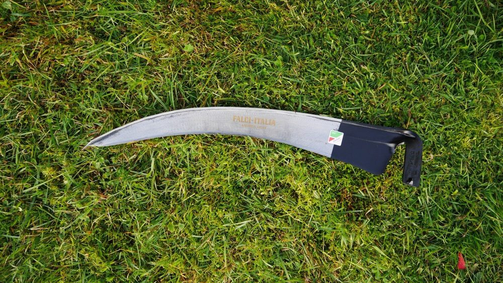
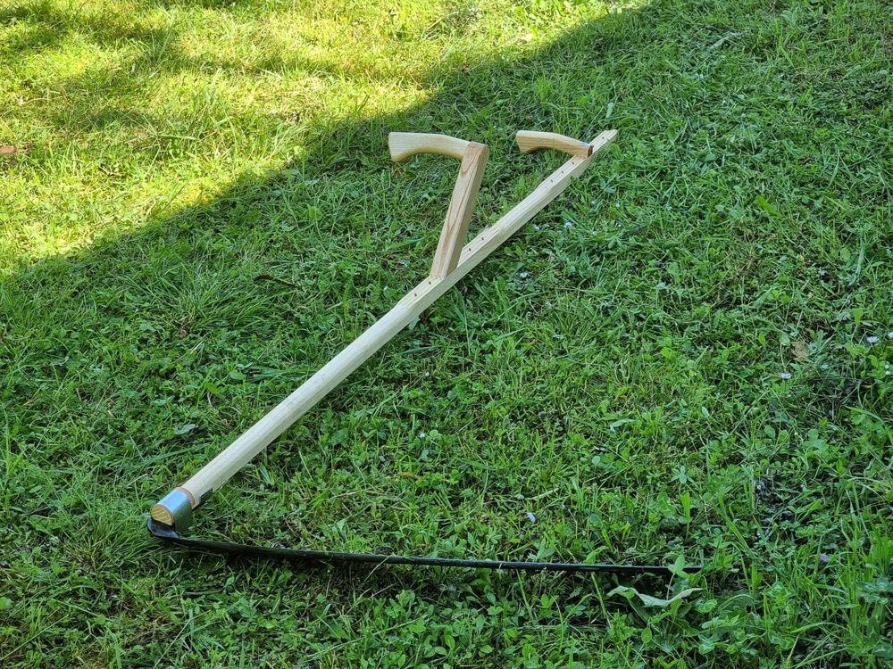
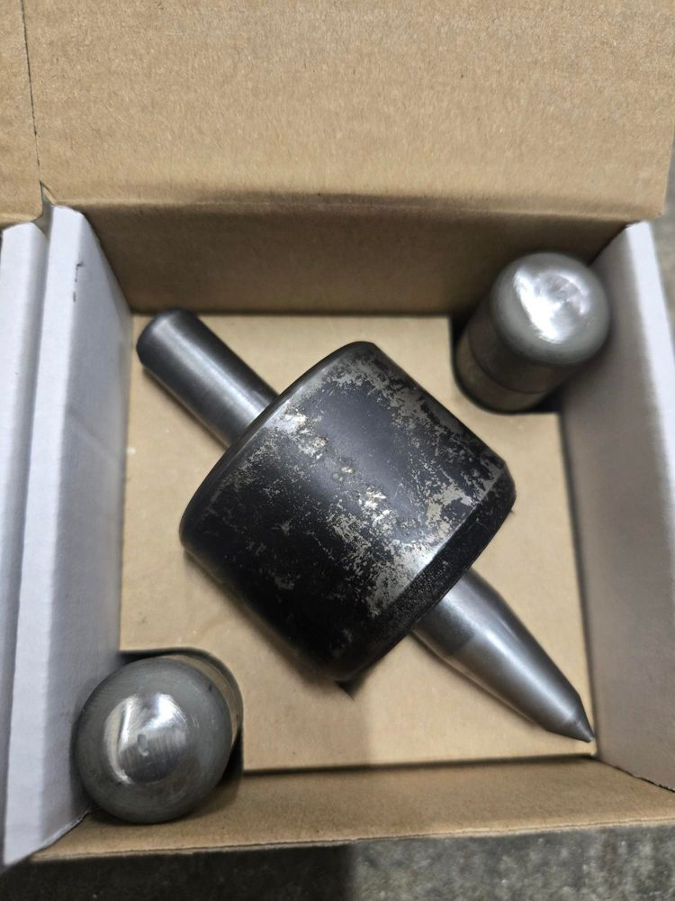
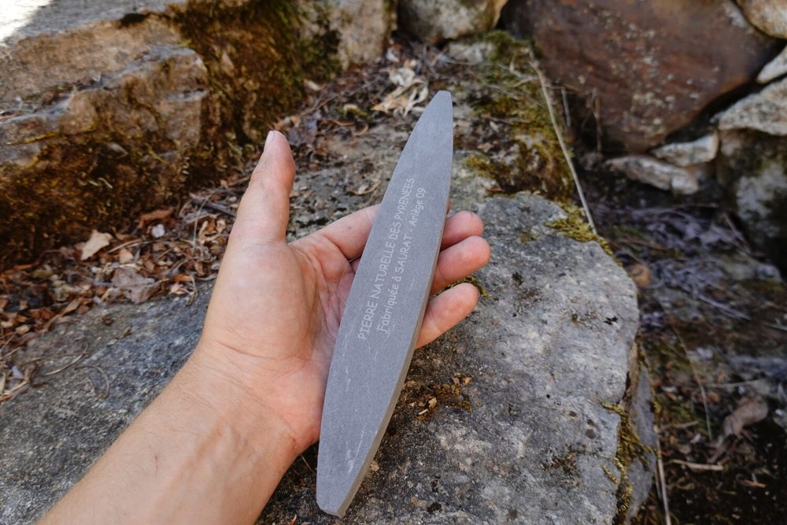

Joyeux anniversaire sister, de la part de Mum et JeanPhi. Voici un kit qui nous semble raisonnable pour commencer ta découverte du fauchage.

Lame de faux
La plus polyvalente, pas trop longue mais suffisamment dure pour gérer les plantes qui ont déjà poussé.
Voir sur la-frontiere.fr →
Manche
Manche en bois, je pense que c'est plus agréable qu'un manche en métal, et fait en France.
Voir sur la-frontiere.fr →
Enclumette
L'outil du débutant pour battre ta faux.
Voir sur la-frontiere.fr →
Pierre
Essentiel toutes les 3 à 5 minutes pour garder le tranchant de ta lame. À conserver dans un fond d'eau.
Voir sur la-frontiere.fr →